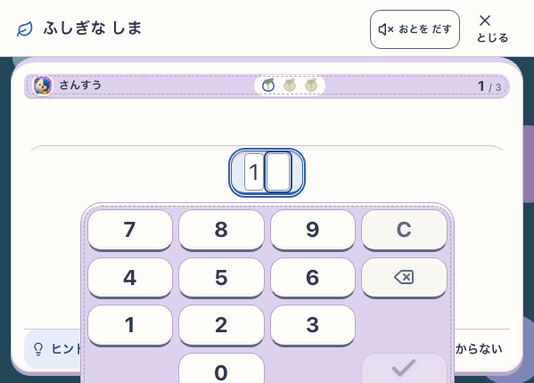
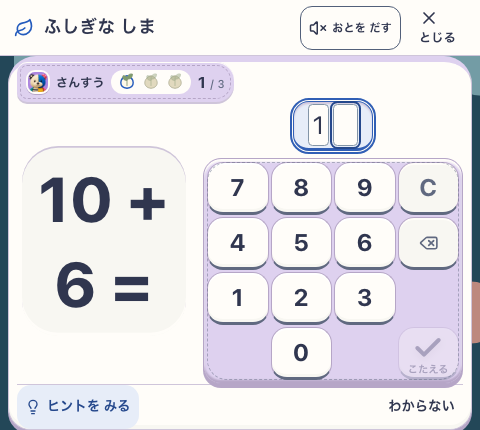
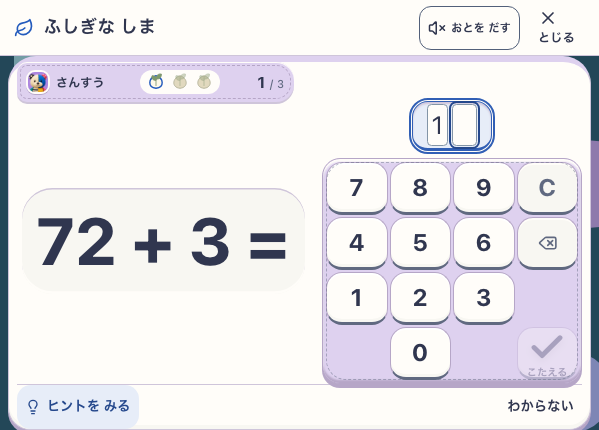
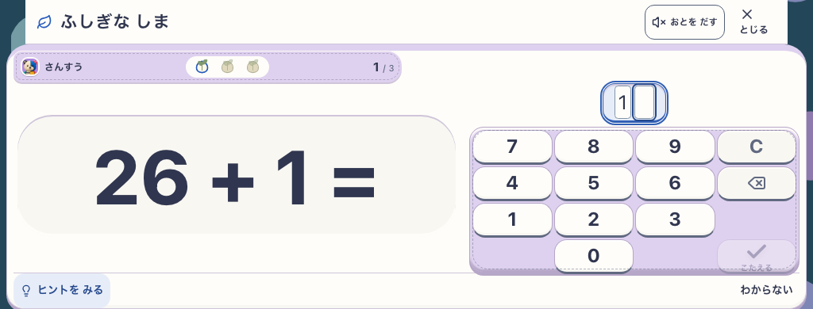

対象: 現行Island、http://127.0.0.1:5198/#/settings?section=learning&learn=1
http://127.0.0.1:5198/#/settings?section=learning&learn=1
修正前 / live-86: 表示下端は430px。入力欄 y=169.19–219.19、テンキー y=227.19–451.19。13キーは各96.5×47.5pxだが、最下段は y=395.69–443.19となり13.19px画面外。ヒント/スキップ操作は y=369–414で、最下段キーと約18px重なる。
修正後 / live-88: 短い横画面レイアウトの幅下限を700pxから480pxへ。問題文/支援を左の独立scroll、答え欄とテンキーを右へ配置。599×430では入力 y=102.19–150.19、テンキー y=158.19–384、全13キー各61.5×52.95px、ヒント/スキップ y=384–428（44px）。全て画面内で、キーと補助操作は重ならない。
境界回帰 / live-87: 480×430、599×430、699×430、700×430、1024×390の5 journeysがPASS（147 route/action checks、95 captures、page error 0）。さらに599×430のlive-88単独journeyも29 checks / 19 captures / error 0。runtime revision development-local、version development-local:60d95334-58f8-4594-b548-c113c90cad1c、Island=true / NatureTown=false、root delivery snap-root-v1、Island delivery mystic-island-v1、visual mystic-island-shore-garden-v18、reduced motion、service workerなし。学習/写真fixtureは隔離context終了時に破棄。
development-local
development-local:60d95334-58f8-4594-b548-c113c90cad1c
snap-root-v1
mystic-island-v1
mystic-island-shore-garden-v18
live-86 修正前report · live-87 境界report · live-88 座標report



